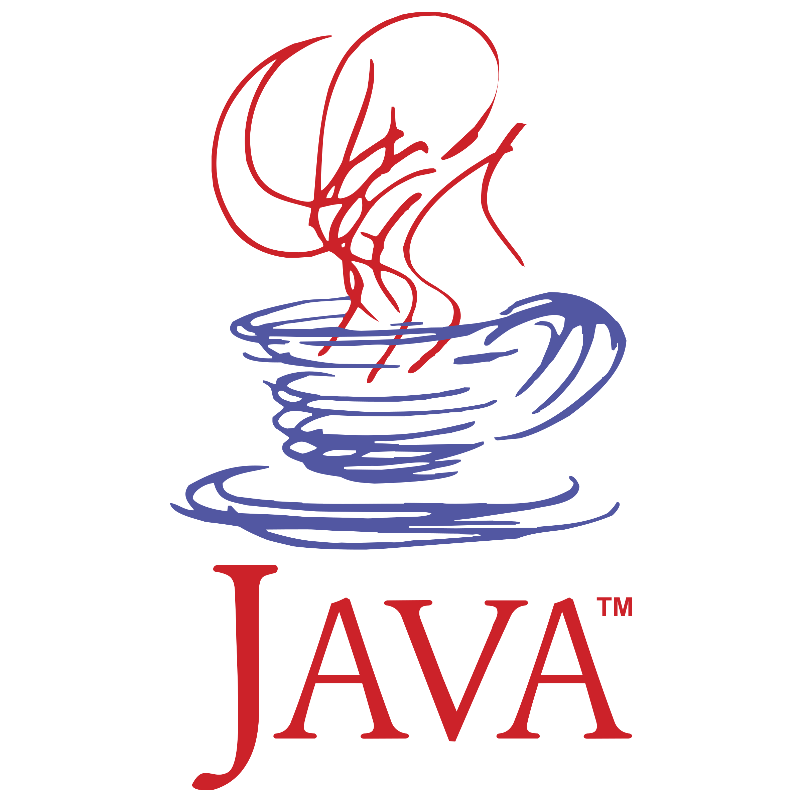
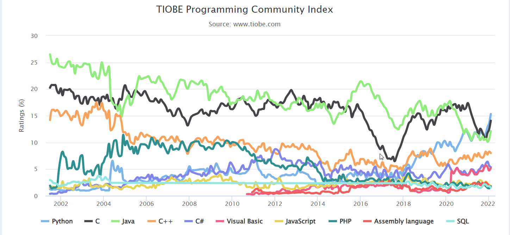
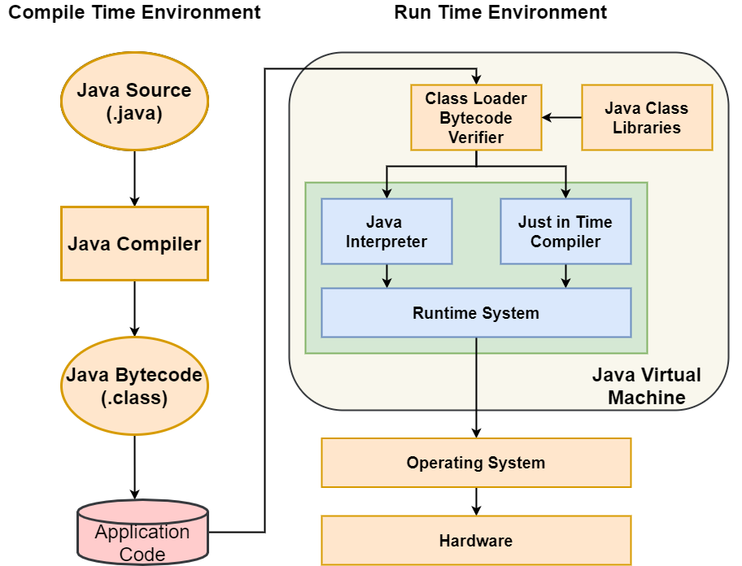
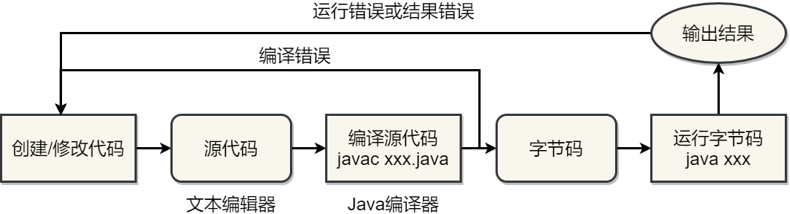

Java程序设计
第一章 关于Java
Java的诞生和发展(一)


Java的诞生和发展(二)

Java Logo Before 2003

Java Logo from 2003 to present
Java的诞生和发展(三)
Java的诞生和发展(四)

Java语言的地位
Java的特征
| 简单 | 面向对象 | 分布式 |
| 解释 | 健壮 | 体系无关 |
| 安全 | 高性能 | 可移植 |
| 多线程 | 动态 | |
Java的特征--简单
- 效仿C/C++语法结构，进行了简化
- 强类型要求
- 没有指针
- 自动垃圾收集
- 异常处理机制
- 程序小，适用于嵌入式系统和网络
Java的特征--面向对象
- 一切都是对象，包括main语句
- 具有良好的封装性
- 没有多继承
Java的特征--分布式
- 为网络分布式计算所设计
- 网络作为固有特性集成
- 提供核心类库使得编码更为容易
Java的特性--解释性
- 编译器将Java源代码翻译成字节码
- 字节码独立于机器
- 由Java解释器负责处理字节码
- 解释器作为Java虚拟机的一部分

Java的特性--健壮性
- 编译时进行异常检查
- 清除易于出错的编程结构
- Java平台保证程序正常运行
- 有异常发生时不会中断
- 运行时进行异常处理
Java的特性--体系无关
- Write Once, Run Anywhere
- 在Java虚拟机上运行，以字节码的形式
- 各种平台均能运行，包括Windows, Linux, MacOS
- 严格定义基本数据类型的大小和算术运算符的行为
- 编译器以Java写成，运行时的程序环境参照POSIX标准，采用ANSI C编写
Java的特性--可移植性
- 字节码运行与体系平台无关
- 无需重新编译即或直接运行
Java的特性--安全性
- 安全验证技术以公钥加密算法为基础
- 实现了几种安全机制保护系统
- 自动内存管理
- 字节码校验机制
- 沙箱机制
- 安全管理
Java的特性--高性能
- 字节码可以动态地为执行应用程序的特定CPU解释成机器码
- 字节码格式在设计上即顾及机器码的产生，因此实际的机器码产生程序相当简单
- 解释器运行时不需检查运行环境，自动垃圾收集器设为优先级最低后台线程，以保证内存得到更有效的应用
- 对于运算量很大的程序可以采用原生代码编写，再经由Java平台转换
- Just-In-Time编译技术更是让字节代码的执行速度大幅度提升
Java的特性--多线程
- 代码可并发执行
- 多线程已集成在系统设计中
- 对进化中的运算环境提供支持，可在不中断网络服务的情况下替换相关组件
Java的特性--动态性
- 动态装载Java类库
- 动态绑定类型
- 动态软件开发过程
Java平台
- Java平台一般即指的Java虚拟机(Java Virtual Machines(JVM))
- 包括一系列支持的编译器、解释器、运行环境等(JDK, API)
Java平台构成

Java技术平台构成
Java技术包含了多个不同技术平台
- Java Platform, Standard Edition(Java SE)面向台式机和服务器端
- Java Platform, Enterprise Edition(Java EE)面向网络应用，服务于企业需求，可与Web技术相结合用于构建网站服务
- Oracle Java Embedded, 面向物联网时代的各种智能设备、传感器等
- Java Platform, Micro Edition(Java ME)面向嵌入式设备、移动终端等
- Java Card, 面向各种智能卡应用
- Java TV, 基于Java ME，面向智能电视和机顶盒开发应用
Java程序的创建和编译

public class Welcome{
public static void main( String[] args ){
System.out.println( "Welcome to Java!" );
}
}
程序员开发代码
由编译器生成用于JVM解释并运行
Java程序的运行

Java与C++
- 语法--数据类型、语法都类似，但Java没有“goto“语句，没有指针，没有多继承，所有对象都进行了封装，没有头文件
- 平台--编译后的Java字节码能通过Java解释器运行于任意平台，C++程序则需要针对每个平台进行编译后方能运行
- 速度--C++比Java快，但Java的每个新版本面世时，运行速度都能得到一定的提升
- 内存--Java能自动处理各种内存操作，包括内存分配和回收，但C++中需要由程序员自行编写代码进行处理
Java与C#
- 语法--两者类似
- 平台--编译后的C#代码与Java类似，只要有合适的解释器都能在任意平台运行，但目前只有Windows上的C#解释器
- 速度--C#比Java快
- 内存--两者都能自动对各种内存操作进行处理
Java开发(一)
Java开发(二)